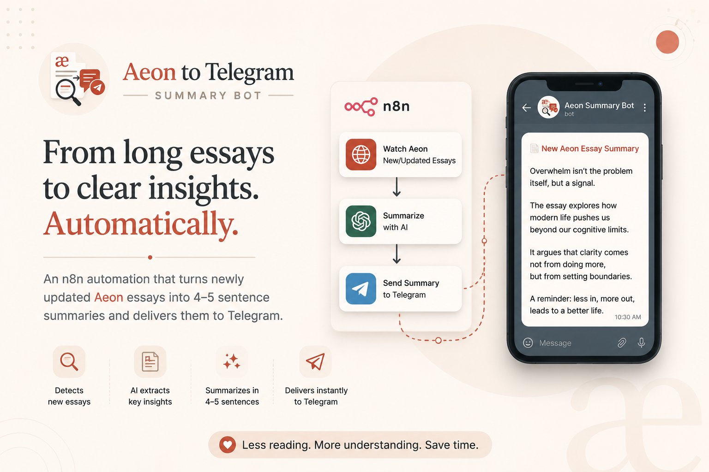

Aeon to Telegram — AI Essay Summary Automation
The Problem
Aeon publishes incredibly thoughtful long-form essays on philosophy, psychology, science, culture, and technology. But the reality is that most people rarely have the time to read 4,000–6,000 word essays regularly.
Important ideas often get lost simply because the content is too long to consume consistently.
I wanted a way to stay intellectually updated without spending hours reading every article manually.
What I Built
I created an AI-powered automation workflow that continuously monitors newly published or updated essays on Aeon and instantly generates concise 4–5 sentence summaries.
The summaries are then delivered directly to Telegram in a clean, readable format. The entire workflow runs automatically with zero manual intervention.
How It Works
Tools & Technologies
Why I Built This
This project was an experiment in combining AI, automation, and information consumption.
Instead of replacing reading, the goal was to reduce friction between discovering valuable ideas and actually consuming them. It demonstrates how AI workflows can transform long-form content into actionable, low-noise knowledge streams.
Demo
Below is a short demo showing how the complete workflow operates in real time — from essay detection to AI summarization and Telegram delivery.